For this week's 3D printing assignment, I chose to make a shade for a LED light bulb. The piece would then be wired and added to a transparent, bottomless bottle of wine.
I was inspired by the Huble light shade designed by David Graas.
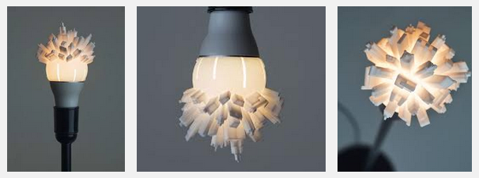In the past 6 months, I've been trying out different materials as light diffusers, having settled with 0.3mm polypropylene sheets for my wooden light boxes. This was not an optimal solution as it's hard to properly glue the sheets to the wood pannels I laser cut.
I thought I should try to print out a 3D piece that would simultaneously diffuse light and "hold" my grandmother's crochet patterns, which I had previously scanned and turned into vectors. The plan was to extrude different parts of the pattern at different hights, so they would make various indents on a (vaguely) cilindrical shell. The uneven thickness of the resulting piece would create some interesting lighting effects, I hoped.
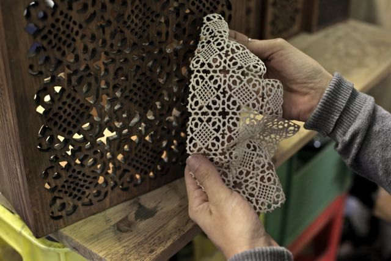3D MODELING
I started by modelling the lightbulb on Rhino, so I was sure to get the right fit for my piece.
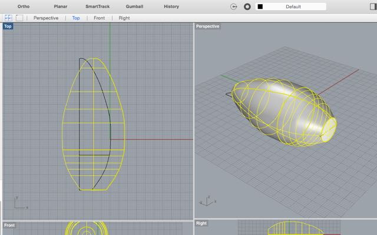I tried to add my extruded crochet surface onto the bulb-shaped object (using the command Flow Along Surface), but it didn't work out so well, even as I added a second shell to it. Clearly I needed a much bigger surface to cover up my lightbulb, or the piece would come out pretty messy .
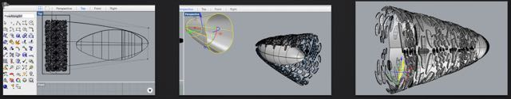So I drew a longer cilindrical object to encapsulate the bulb. I felt that my shell shape was too "perfect" though, so I decided to "beat it up" a bit. I wanted it to have a somewhat scruffy look, as if it had been wrinkled and damaged.
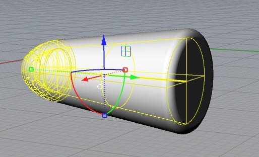To better do this, I needed to transform my surfaces into a mesh. I downloaded Sculptris a free, lite version of ZBrush. Playing with Sculptris was fun for about 10 minutes, until I realized that -- despite it's simplicity -- I could not change the ultra dark colours of both my object and my interface. Sculpting in this manner was not a great experience at all, since I could barely see the results of my actions on the piece. I read in some forums that the software is not working well with Mac's Yosemite operating system; some users even noted that it is no longer being updated.
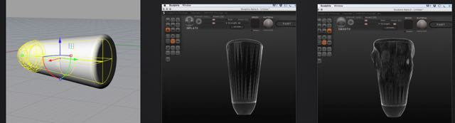I thus put Sculptris to the side and went back to Rhino, to try to continue working on my mesh object (a nice feature of Rhino is its capacity to work in both Mesh and Nurbs). I tried to apply my crochet surface to the mesh object, by using the command "Flow Along Surface". It didn't work out, apparently one cannot flow surfaces onto a Mesh...! I also tried doing a "Project" command. Clearly, this was not the way either:
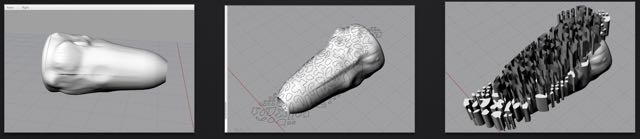I then figured it would maybe be easier to drop my MESH and just go back to modelling in NURBS. To make my object more "editable", I needed to add more control points to it. This was done with the command "Rebuild UV".
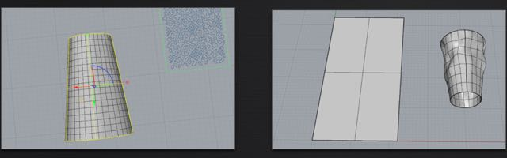I took the crochet's vector image and extruded parts of it at different heights (between 0.8 and 2.4mm). I also tappered the extrusions at 30º (command Extrude Curve Tappered), so that I could print out my piece without any support material, while avoiding overhangs. This created a few issues, since the pattern pieces didnt always have the right geometry/placement for this kind of operation.
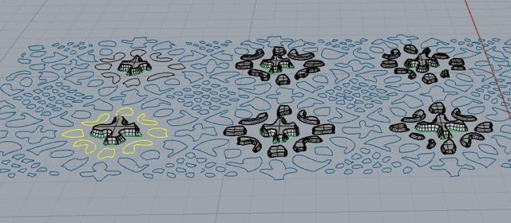I then used again the "Flow Along Surface" command:
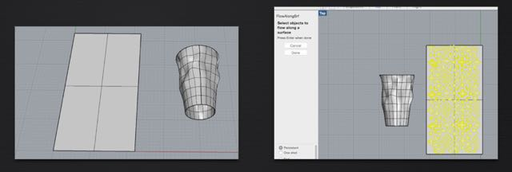Initially it was not coming out the way I intended:
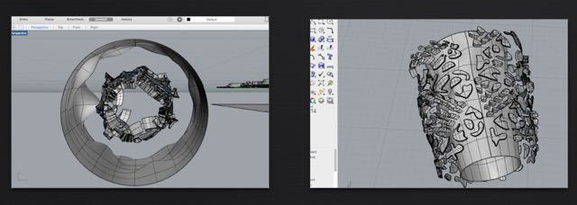But eventually I managed to work out how the two objects should flow onto each other (making sure the seam of the object is aligned with the right corner of the surface):
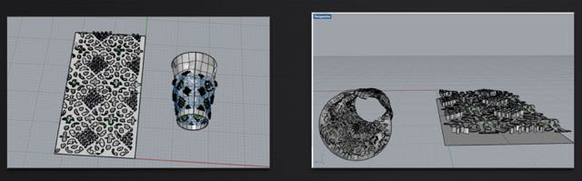Now that my pattern had landed well on my object, I used the command Boolean Difference, to actually enbed it in the object and create the different indents. I tappered the extrusions at 30º
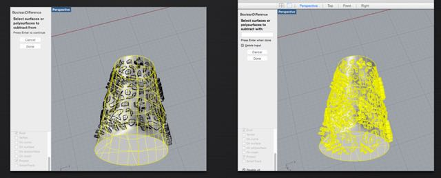This operation was not without problems, as some of my pattern shapes stubbornly refused to dent my object. To overcome this, I had to look for the "Naked Edges" (in the command Show Edges)
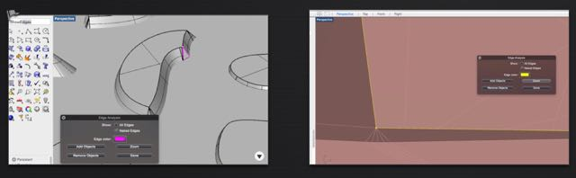Once the naked edge issue was solved, a few pattern shapes were still refusing the boolean operation and I was unable to understand why. So I decided it was time to transform my object to Mesh, to try forcing them in. When you do this, you can adjust the object's UV to improve its resolution, as you can see in the picture:
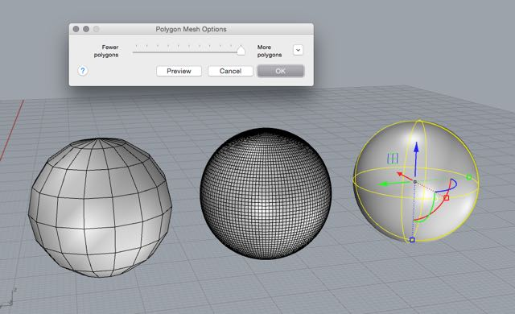Once my Mesh was created, I checked again for naked edges (quite a few new ones had appeared during the mesh conversion). I fixed them by deleting the faces with problems and rebuilding them using "patch single face", "patch mesh holes" and "fill mesh holes".
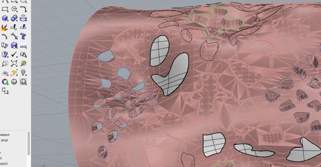All but one of the remaining shapes were attached to and subtracted from the object. This last piece had a weird glass-like look to it, a sign it had some "Manifold Edges" issues (when mesh faces are set in too many directions). To fix these meshes, I deleted possible error faces and used the commands "Add mesh face" and "unify Mesh normals" to set all faces in the same direction.
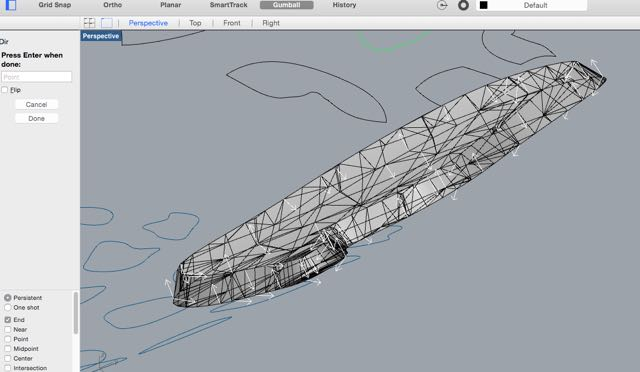Now that my pattern was sucessfully integrated into my object, it was time to print it out!
3D PRINTING
I printed out my piece with a PRUSA I3, it took approximately three hours. The printing time can be easily reduced to less than one hour, I was told at the lab, so for the 2.0 version of the lamp shade I will be using a different machine.
I started by cleaning up the mirrored build plate and then added a layer of paper glue, to make sure my object would not move during the printing. I printed the object upside down so the widest part would be at the bottom, giving the object a more stable base.
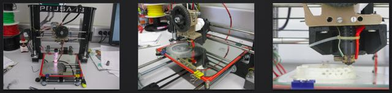I printed with a natural color fillament to try to minimize light absorption and improve the shade's diffusing ability. I also printed out the shell with no infill, so more light could go through.
Here is the printed object:
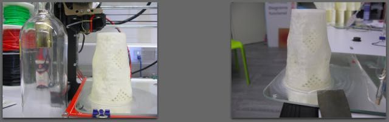The light diffusion works really well, without dimming the light too much. The crochet patters, however, are way too subtle to be noticed. In a 2.0 version, I will opt to cut them all the way through my shell, instead of just having them dent it. Only this way can you really tell the pattern is in there, as the extrusions inside are barely noticeable.
Mechanically, the piece needs some fine tuning too. Even though it hangs directly from the bulb, and fits relatively well on it, I didn't have enough time to print out the attaching part of the object, so one can still see the bulb plastic underneath. I will fix this in my second print.
This is the lit object after being mounted on to (a rough version of) the glassbottle:
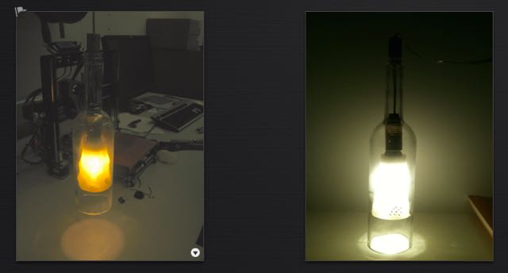